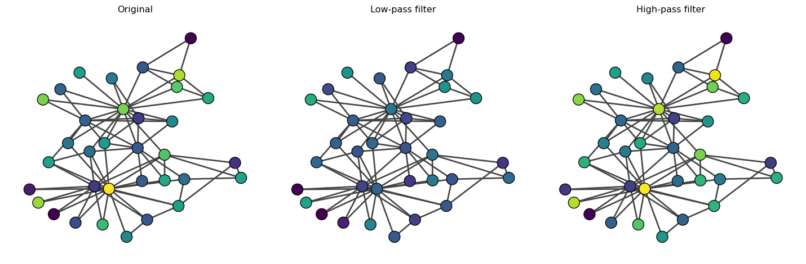
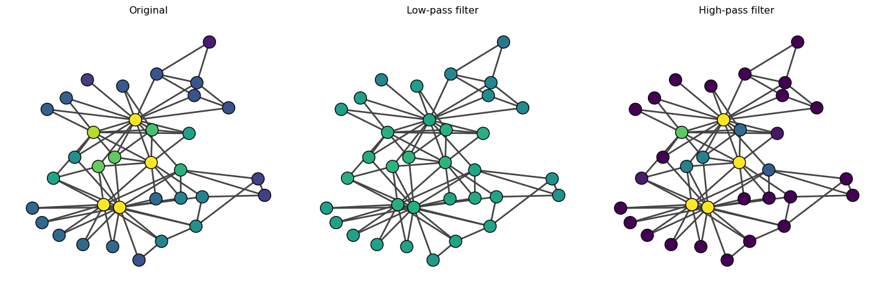
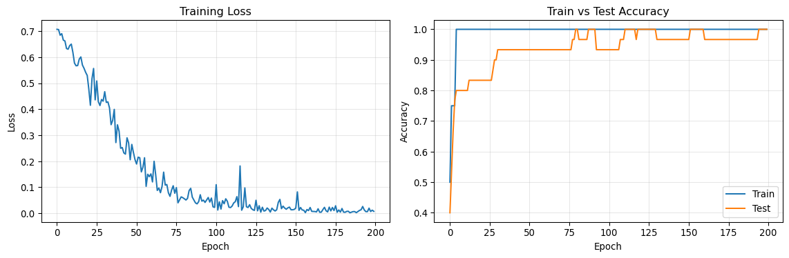
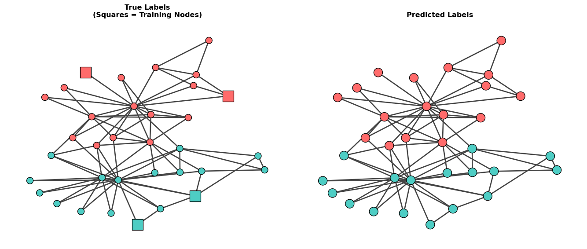

# Compute Laplacian matrix
deg = np.array(A.sum(axis=1)).reshape(-1)
D = sparse.diags(deg)
L = D - A
# Compute eigendecomposition
evals, evecs = np.linalg.eigh(L.toarray())
# Sort eigenvalues and eigenvectors
order = np.argsort(evals)
evals = evals[order]
evecs = evecs[:, order]Coding: Graph Neural Networks Implementation
Hand-crafted Low pass and high pass filters
Let us showcase the idea of spectral filtering with a simple example with the karate club network.
We will first compute the laplacian matrix and its eigendecomposition.
Now, let’s create a low-pass and high-pass filter.
alpha = 2
L_low = evecs @ np.diag(1 / (1 + alpha * evals)) @ evecs.T
L_high = evecs @ np.diag(alpha * evals / (1 + alpha * evals)) @ evecs.T
print("Size of low-pass filter:", L_low.shape)
print("Size of high-pass filter:", L_high.shape)Size of low-pass filter: (34, 34)
Size of high-pass filter: (34, 34)Notice that the high-pass filter and low-pass filter are matrices of the same size as the adjacency matrix A, which defines a ‘convolution’ on the graph as follows:
{\bf x}' = {\bf L}_{\text{low}} {\bf x} \quad \text{or} \quad {\bf x}' = {\bf L}_{\text{high}} {\bf x}.
where {\bf L}_{\text{low}} and {\bf L}_{\text{high}} are the low-pass and high-pass filters, respectively, and {\bf x}' is the convolved feature vector.
Now, let’s see how these filters work. Our first example is a random feature vector.
# Random feature vector
x = np.random.randn(A.shape[0], 1)
# Convolve with low-pass filter
x_low = L_low @ x
# Convolve with high-pass filter
x_high = L_high @ xLet us visualize the results.

We observe that the low-pass filter results in smoother {\bf x} between connected nodes (i.e., neighboring nodes have similar {\bf x}). The original {\bf x} and {\bf x}'_{\text{low}} are very similar because random variables are high-frequency components. In contrast, when we apply the high-pass filter, {\bf x}'_{\text{high}} is similar to {\bf x} because the high-frequency components are not filtered.
Let’s now use an eigenvector as our feature vector {\bf x}.

The high-pass filter increases the contrast of the eigenvector centrality, emphasizing the differences between nodes. On the other hand, the low-pass filter smooths out the eigenvector centrality.
1 Training Graph Neural Networks with PyTorch Geometric
What is PyTorch Geometric?
PyTorch Geometric (PyG) is a library built on top of PyTorch specifically designed for deep learning on graphs and other irregular structures. It provides:
- Efficient data structures for representing graphs (edge lists, sparse matrices)
- Pre-implemented GNN layers (GCN, GAT, GraphSAGE, GIN, and many more)
- Common graph datasets (citation networks, social networks, molecular graphs)
- Mini-batching utilities for training on large graphs
- Message passing framework for easily building custom GNN architectures
PyTorch Geometric handles the complexity of implementing graph convolutions and lets us focus on model design and experimentation. Instead of manually implementing the aggregation operations we discussed earlier, we can use pre-built layers like GCNConv, GATConv, etc.
Our Task: Semi-Supervised Node Classification
In this section, we’ll learn how to train a Graph Neural Network (GNN) to perform node classification. We’ll use the Karate Club network and predict membership labels based on partially labeled nodes. Our node features will be eigenvectors of the normalized Laplacian matrix.
This is a semi-supervised learning task: we have labels for only a small subset of nodes and want to predict labels for the remaining nodes by leveraging the graph structure.
Step 1: Install and Import Libraries
First, let’s import the necessary libraries:
Installing PyTorch Geometric: If you don’t have PyTorch Geometric installed, run:
pip install torch-geometricFor detailed installation instructions (including GPU support and specific PyTorch versions), see the official installation guide.
import torch
import torch.nn.functional as F
from torch_geometric.nn import GCNConv
from torch_geometric.data import Data
import numpy as np
import igraph as ig
from scipy import sparse
import matplotlib.pyplot as plt
import seaborn as snsStep 2: Prepare the Data
We’ll load the Karate Club network and compute node features from the normalized Laplacian eigenvectors.
import networkx as nx
# Load the Karate Club network
G = nx.karate_club_graph()
A = nx.adjacency_matrix(G)
# Get true community labels
membership = np.unique([d[1]['club'] for d in G.nodes(data=True)], return_inverse=True)[1]
n_nodes = A.shape[0]
print(f"Number of nodes: {n_nodes}")
print(f"Membership: {membership}")Number of nodes: 34
Membership: [0 0 0 0 0 0 0 0 0 1 0 0 0 0 1 1 0 0 1 0 1 0 1 1 1 1 1 1 1 1 1 1 1 1]Creating Node Features
Graph neural networks require node features as input to make predictions. However, the Karate Club network doesn’t come with node metadata (attributes like age, interests, etc.) - we only have the network structure and membership labels.
Since we need features but don’t have any, we’ll create them using spectral embedding - specifically, eigenvectors of the normalized Laplacian matrix. This is a common approach when dealing with networks that lack node attributes.
Now, let’s compute the normalized Laplacian and extract eigenvectors as node features:
# Compute normalized Laplacian: L_norm = I - D^{-1/2} A D^{-1/2}
deg = np.array(A.sum(axis=1)).reshape(-1)
D_inv_sqrt = sparse.diags(1.0 / np.sqrt(deg))
L_norm = sparse.eye(n_nodes) - D_inv_sqrt @ A @ D_inv_sqrt
# Compute eigendecomposition
evals, evecs = np.linalg.eigh(L_norm.toarray())
# Use the first k eigenvectors as features (excluding the trivial one)
k = 5
node_features = evecs[:, 1:k+1] # Skip the first eigenvector (constant)
print(f"Node feature shape: {node_features.shape}")
print(f"Feature matrix:\n{node_features[:5]}") # Show first 5 rowsNode feature shape: (34, 5)
Feature matrix:
[[-2.88145579e-01 1.12567115e-01 -5.73186014e-02 5.25378039e-02
-3.14434772e-01]
[-1.40842407e-01 3.44386666e-01 -1.59157964e-02 3.24502220e-02
2.26171287e-02]
[-6.72590109e-02 2.73089509e-01 -9.84243347e-03 -7.56784621e-02
1.19000575e-01]
[-1.34361370e-01 3.15397166e-01 -5.20087178e-02 1.41200733e-01
2.48990185e-01]
[-2.32296270e-01 -1.63500942e-01 -2.17413053e-05 2.41275396e-02
-4.45745025e-01]]Step 3: Create PyTorch Geometric Data Object
PyTorch Geometric requires data in a specific format. We need to convert our network into an edge list and create a Data object.
# Convert adjacency matrix to edge list (COO format)
edge_index = torch.tensor(np.array(A.nonzero()), dtype=torch.long)
# Convert node features to tensor
x = torch.tensor(node_features, dtype=torch.float)
# Convert labels to tensor
y = torch.tensor(membership, dtype=torch.long)
# Create PyTorch Geometric Data object
data = Data(x=x, edge_index=edge_index, y=y)Step 4: Create Train/Test Masks
We’ll use only a small subset of labeled nodes for training (semi-supervised learning) and test on the rest.
# Create train/test masks
train_mask = torch.zeros(n_nodes, dtype=torch.bool)
test_mask = torch.zeros(n_nodes, dtype=torch.bool)
# Select 2 nodes from each class for training
for label in [0, 1]:
label_indices = np.where(membership == label)[0]
np.random.shuffle(label_indices)
train_mask[label_indices[:2]] = True
# All other nodes are for testing
test_mask = ~train_mask
data.train_mask = train_mask
data.test_mask = test_mask
print(f"Number of training nodes: {train_mask.sum().item()}")
print(f"Number of test nodes: {test_mask.sum().item()}")
print(f"Training node indices: {torch.where(train_mask)[0].numpy()}")Number of training nodes: 4
Number of test nodes: 30
Training node indices: [ 4 11 23 26]Step 5: Define the GNN Model
We’ll create a simple 2-layer Graph Convolutional Network (GCN).
GCNConv: PyTorch Geometric’s implementation of Graph Convolutional Network layer from Kipf & Welling (2017). It performs neighborhood aggregation with symmetric normalization: \mathbf{X}^{(l+1)} = \sigma(\mathbf{\hat{D}}^{-1/2}\mathbf{\hat{A}}\mathbf{\hat{D}}^{-1/2}\mathbf{X}^{(l)}\mathbf{W}^{(l)}).
class GCN(torch.nn.Module):
def __init__(self, num_features, hidden_channels, num_classes):
super(GCN, self).__init__()
# First GCN layer: input features -> hidden dimension
self.conv1 = GCNConv(num_features, hidden_channels)
# Second GCN layer: hidden dimension -> output classes
self.conv2 = GCNConv(hidden_channels, num_classes)
def forward(self, x, edge_index):
# First layer with ReLU activation
x = self.conv1(x, edge_index)
x = F.relu(x)
x = F.dropout(x, p=0.5, training=self.training)
# Second layer (no activation, we'll use softmax later)
x = self.conv2(x, edge_index)
return x
# Initialize the model
model = GCN(
num_features=data.num_node_features,
hidden_channels=16,
num_classes=2
)
print(model)
print(f"\nTotal parameters: {sum(p.numel() for p in model.parameters())}")GCN(
(conv1): GCNConv(5, 16)
(conv2): GCNConv(16, 2)
)
Total parameters: 130ReLU (Rectified Linear Unit): Activation function \text{ReLU}(x) = \max(0, x) that introduces non-linearity. It outputs the input if positive, otherwise zero. This allows the network to learn complex patterns.
Dropout: Regularization technique that randomly sets a fraction of neurons to zero during training (here 50%). This prevents overfitting by forcing the network to learn robust features that don’t rely on specific neurons.
Step 6: Training Loop
Now let’s train the GNN model using gradient descent.
# Set up optimizer and loss function
optimizer = torch.optim.Adam(model.parameters(), lr=0.01, weight_decay=5e-4)
criterion = torch.nn.CrossEntropyLoss()
# Training function
def train():
model.train()
optimizer.zero_grad()
# Forward pass
out = model(data.x, data.edge_index)
# Compute loss only on training nodes
loss = criterion(out[data.train_mask], data.y[data.train_mask])
# Backward pass
loss.backward()
optimizer.step()
return loss.item()
# Evaluation function
def test():
model.eval()
with torch.no_grad():
out = model(data.x, data.edge_index)
pred = out.argmax(dim=1)
# Calculate accuracy on train and test sets
train_correct = pred[data.train_mask] == data.y[data.train_mask]
test_correct = pred[data.test_mask] == data.y[data.test_mask]
train_acc = int(train_correct.sum()) / int(data.train_mask.sum())
test_acc = int(test_correct.sum()) / int(data.test_mask.sum())
return train_acc, test_acc
# Train the model
losses = []
train_accs = []
test_accs = []
for epoch in range(200):
loss = train()
train_acc, test_acc = test()
losses.append(loss)
train_accs.append(train_acc)
test_accs.append(test_acc)
if (epoch + 1) % 20 == 0:
print(f'Epoch {epoch+1:03d}, Loss: {loss:.4f}, '
f'Train Acc: {train_acc:.4f}, Test Acc: {test_acc:.4f}')
print(f'\nFinal Test Accuracy: {test_accs[-1]:.4f}')Epoch 020, Loss: 0.5297, Train Acc: 1.0000, Test Acc: 0.8333
Epoch 040, Loss: 0.3153, Train Acc: 1.0000, Test Acc: 0.9333
Epoch 060, Loss: 0.1510, Train Acc: 1.0000, Test Acc: 0.9333
Epoch 080, Loss: 0.0596, Train Acc: 1.0000, Test Acc: 1.0000
Epoch 100, Loss: 0.0221, Train Acc: 1.0000, Test Acc: 0.9333
Epoch 120, Loss: 0.0247, Train Acc: 1.0000, Test Acc: 1.0000
Epoch 140, Loss: 0.0413, Train Acc: 1.0000, Test Acc: 0.9667
Epoch 160, Loss: 0.0218, Train Acc: 1.0000, Test Acc: 1.0000
Epoch 180, Loss: 0.0179, Train Acc: 1.0000, Test Acc: 0.9667
Epoch 200, Loss: 0.0070, Train Acc: 1.0000, Test Acc: 1.0000
Final Test Accuracy: 1.0000Step 7: Visualize Training Progress
Let’s visualize how the model learned over time.

Step 8: Visualize Predictions
Finally, let’s visualize the network with true labels, training nodes, and predictions.
Squares vs Circles: In the left plot, square nodes represent the training nodes (labeled data used for learning), while circle nodes represent test nodes (unlabeled data to predict). This visualization shows that the GNN learned from only 4 labeled nodes to predict labels for the remaining 30 nodes.

Misclassified nodes: []
Number of misclassified nodes: 0Understanding What We Did
Data Preparation: We used eigenvectors of the normalized Laplacian as node features. These features capture the structural position of each node in the network.
Semi-Supervised Learning: We trained on only 4 labeled nodes (2 from each community) and predicted labels for the remaining 30 nodes. This demonstrates the power of GNNs to propagate information through the network structure.
GCN Architecture: Our 2-layer GCN works as follows: - Layer 1: Aggregates features from neighbors and transforms them to a hidden representation - Layer 2: Aggregates hidden representations and outputs class probabilities
Message Passing: Each GCN layer performs: \mathbf{h}_i^{(l+1)} = \sigma\left(\sum_{j \in \mathcal{N}(i)} \frac{1}{\sqrt{d_i d_j}} \mathbf{W}^{(l)} \mathbf{h}_j^{(l)}\right)
where neighbors influence each node’s representation, allowing label information to propagate through the network.
Training: We optimized the model using cross-entropy loss on the small set of labeled nodes, but the loss gradients propagate through the entire network structure, allowing all nodes to contribute to learning.